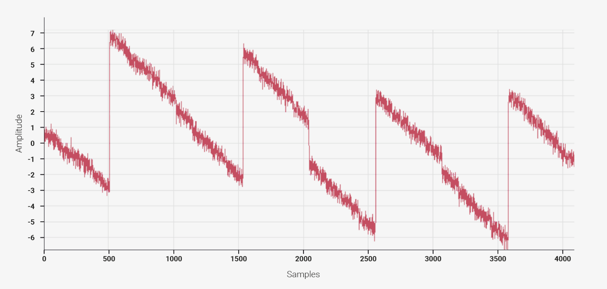

How accurate is your ADC (analog to digital converter)? The answer might be, not as accurate as you think. This is a story about dealing with an ADC that is just barely (or not quite) good enough for what I need to do.
Background
Here’s the situation: I’m making a digital voice module for a modular synthesizer, using an Adafruit Feather RP2040 board (similar to a Raspberry Pi Pico) which has an RP2040 microcontroller. I need the microcontroller to read an analog control voltage that represents the pitch of notes to be played. This voltage reading has to be quite accurate because people's ears are sensitive to small pitch inaccuracies.
The RP2040 has a built-in ADC, which at first glance looks like it should be able to do the job:
- 12-bit resolution — This gives 4096 distinguishable voltage values, which seems just about enough for good pitch tracking over 10 octaves (as long as Jacob Collier isn’t listening).
- Up to 500,000 samples per second — I need to sample the pitch voltage a few thousand times per second, to allow audio-rate modulation, so this is plenty fast enough.
I would prefer to use this built-in ADC rather than a separate ADC chip.
Problems
I wired up a simple prototype with the Feather board, wrote some firmware, hooked it up to my modular synth, and played some music. Unfortunately, the results were not great. Even though I had tried to calibrate the firmware so the notes would be in tune, they mostly weren’t. Some notes on the keyboard played sharp and others were flat. Pitch scaling just wasn’t consistent.
Another problem was that the ADC values jumped around quite a bit, even when the input voltage was steady. There seemed to be quite a bit of noise in either the input voltage or the ADC itself.
Fixes
The second problem — noisy ADC values — was simple to deal with. I added a simple lowpass RC filter on the input line to remove high-frequency noise. That didn’t completely eliminate the problem but it made a big improvement. I may also do some averaging in the firmware when it reads the ADC input, to smooth it out even more. One thing to keep in mind is that both of these techniques will reduce the input bandwidth as high frequencies are filtered out. For my design, I want to be able to handle frequencies up to “a few” kilohertz.
The other problem — uneven pitch scaling — is caused by systematic inaccuracies in the RP2040’s ADC unit. It looked like this might force me to use an external ADC IC instead, unless I could find a way to even out the ADC response.
The RP2040 datasheet helpfully includes a graph of its ADC’s non-linearity:
(Any ADC datasheet will have a similar graph of “integral non-linearity” or “INL”.) This graph shows that the ADC’s behaviour is very non-linear, but it seems to be pretty well defined.
I compensated for this non-linear response in my firmware by mapping the ADC input value to the theoretically correct value. The mapping is a linear function with discontinuous jumps at specific values, based on the above graph. I implemented this mapping with a lookup table for efficiency, because the microcontroller is sampling the input voltage thousands of times per second while also performing other tasks.
Results
After I added filtering and linearization, I was able to adjust the pitch scaling so that it tracks the keyboard pretty accurately. Not perfectly, but close enough for rock & roll.
Even after these adjustments, the RP2040’s built-in ADC is barely up to the task. An external 14-bit ADC would work better, but I haven’t found one that is accurate, fast, not too expensive, and in a package that I can deal with. For now I’m sticking with the built-in ADC.